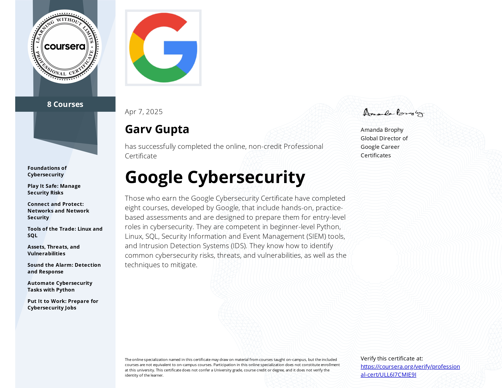
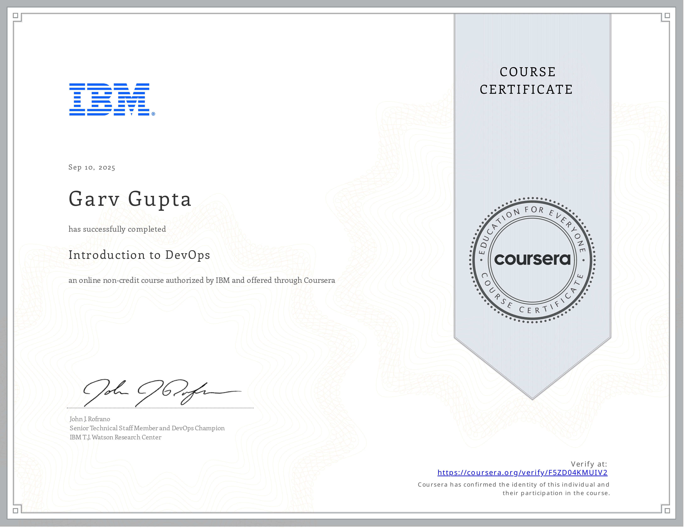
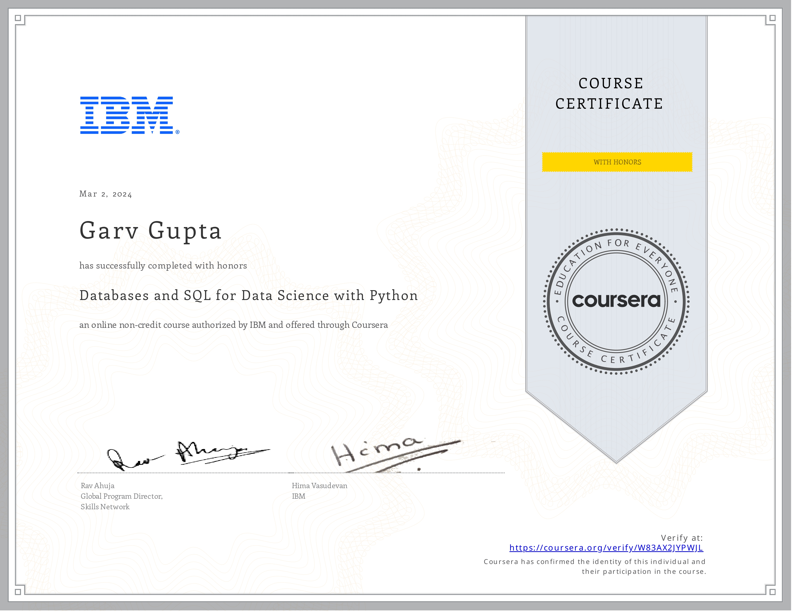
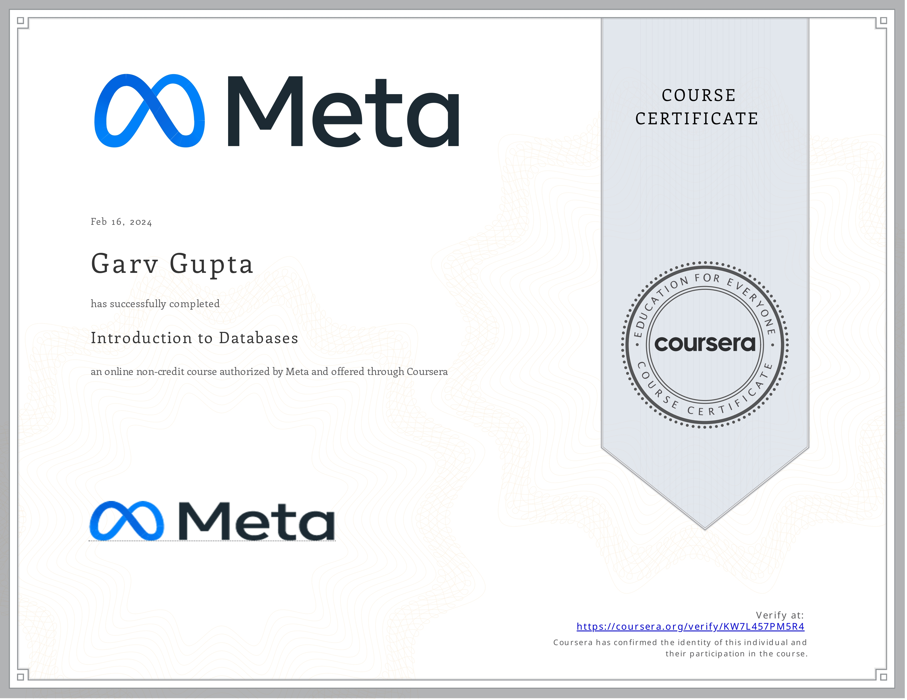

Education
Academic background and professional certifications that built the foundation for the work I do.
Timeline
Bachelor of Engineering
Computer Science Engineering
Chandigarh University
Focused on cybersecurity, DevOps, software development, and data analytics. Beyond coursework, I spend time building containerized systems, writing automation scripts, and working on data engineering projects. I treat the degree as a foundation and the projects as the real education.
Grade 12 (CBSE)
Physics, Chemistry, Mathematics
Agra Vanasthali Vidyalaya, Agra
Built analytical foundations in mathematics and physics. The problem-solving mindset from these years carries directly into how I approach system design and debugging today.
Grade 10 (CBSE)
Delhi Public School, Agra
Early exposure to computers sparked the curiosity that led to everything else. First time realizing that understanding how systems work is more interesting than just using them.
Verified Credentials
Certifications from Google, IBM, EC-Council, and IIT that back up the skills I list.

Google Cybersecurity (Professional)
Google via Coursera · 2025
Linux, Python scripting, SIEM tools, IDS, risk analysis, and threat detection workflows used in real security operations.
VerifiedCybersecurity Attack and Defense
EC-Council · 2024
Ethical hacking essentials, network defense fundamentals, and digital forensics methodology.
EC-Council
Introduction to DevOps
IBM · 2025
CI/CD pipeline design, automation workflow principles, and container-based deployment practices.
IBM
Cloud, IoT, Edge and ML (Elite)
IIT Kanpur via NPTEL · 2025
Edge computing, cloud fundamentals, IoT architecture, and applied machine learning at scale.
IIT Kanpur
Databases and SQL (Honors)
IBM · 2024
Joins, subqueries, transactions, relational modeling, and advanced SQL patterns for data access.
IBM
Introduction to Databases
Meta via Coursera · 2024
Normalization, entity-relationship modeling, constraints, and database system design fundamentals.
Meta